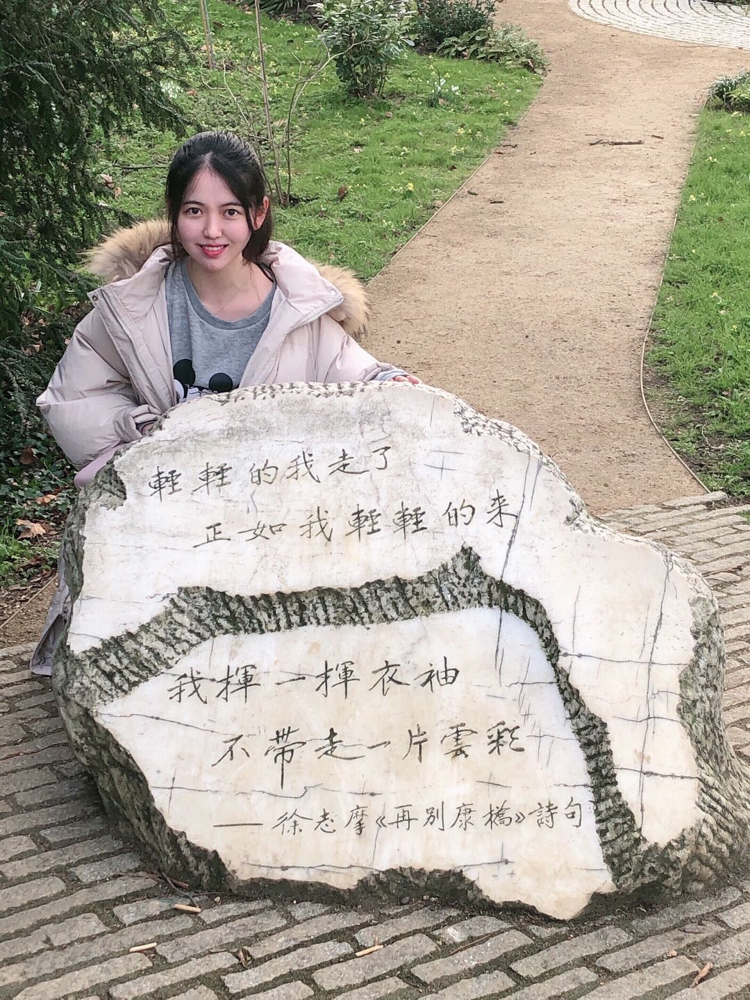

Yijia HaoBachelor
Glasgow College, |
 |
My name is Yijia Hao, a junior from University of Electronic Science and Technology of China, majoring in Electronics and Electrical Engineering. Simultaneously, I will also receive an Honors Degree in the same major from the University of Glasgow in June 2021. My reaserch interests include Deep Learning， attention mechanism，digital signal processing.
Languages: native Chinese, fluent English
Programming Skills: MATLAB, C, Quartus II, Python, LaTex
Interests: Calligraphy, Piano, Magic, Innovation, Storytelling